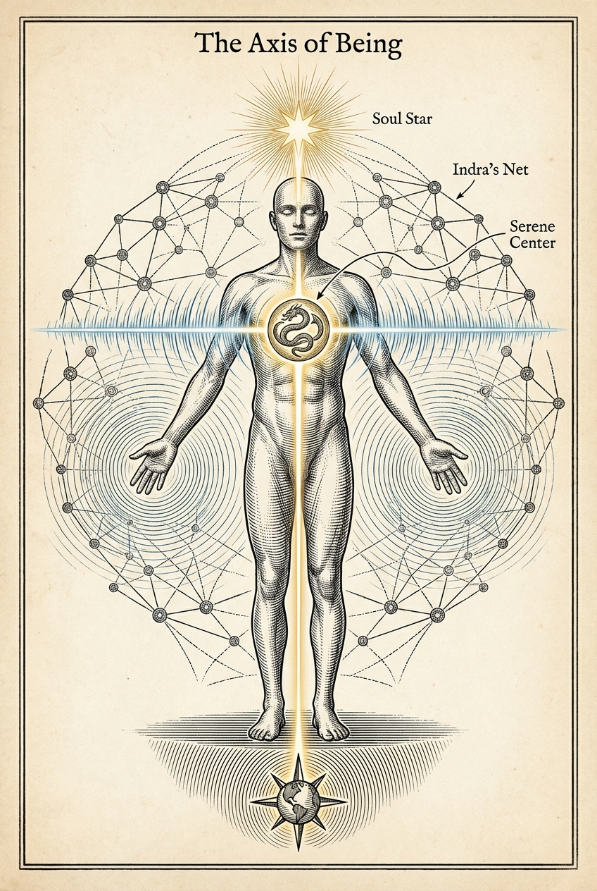

Part I
Chapter 3: Primal & Transcendent
Estimated reading time: 12 min
At the heart of the Dragon’s wisdom lies a living paradox: the raw, untamed forces of creation held inside the stillness of transcendence.
The Dragon is neither raw primal force nor the Divine. It is a bridge: breath of fire meeting breath of silence, a conduit through which earth and cosmos flow and intermingle. This path asks you to let that crossing become lived within your own being.
Awakening moves through flesh, feeling, story, symbol, and spacious awareness. The Five Energetic Bodies give those movements a map, so the Dragon’s architecture can be felt in tissue, attention, axis, and ordinary choice.
These are five interwoven dimensions of experience: fields that interpenetrate rather than stack. Attention can travel through them because awareness can foreground one dimension at a time.
This map protects differentiation as much as union. The Form Body, Eros Body, Soul Body, Archetypal Body, and Void Body are lenses of experience rather than identities to fuse with. The body matters without becoming the whole self. Eros moves without becoming command. Soul gives continuity without turning story into prison. Archetype lends force without becoming a throne. The Void humbles every claim: the Void Body is a doorway to spaciousness, not proof that the ego has become infinite.
Let one symbol arrive at a time. Feel where experience lands, and let the center grow strong enough to hold it.
The Five Energetic Bodies
Select a body to see how interpenetrating dimensions of experience meet along the Axis of Being. This map names physical, energetic, psychological, mythic, and formless dimensions without asking you to leave the body. The golden thread is witnessing attention moving through every dimension, not another body or the owner of identity.
Soul Body
Memory, Meaning, Values
The organized personal psyche: memory, narrative identity, values, conscience, intuition, and responsible choice.
The Five Energetic Bodies
The Form Body
Your Form Body is the tangible connection to the physical world—your tissues, bones, breath, posture, senses, and the simple fact of being here. It is the vessel that carries every other experience.
When the Form Body is tended, your awareness has somewhere stable to land. You feel the ground beneath your feet, the contour of the chair, the temperature of the air. Sensation becomes the language of presence.
Neglected, the Form Body hardens or collapses: shoulders creep toward the ears; jaws clench; breath thins. Integration begins by befriending these signals and letting the body participate in the work of awakening.
You might sense this layer as weight in the feet, fuller breath, and clear contact with surfaces.
The Eros Body
Your Eros Body is the animating life force—emotion, passion, libido in its broadest sense, creative surge, instinct. It is the current that moves the river of your life.
When the Eros Body is open, vitality circulates: warmth, tingling, pulse; creativity rises; emotion moves without getting trapped.
When it’s constricted, energy loops or stalls—restlessness with nowhere to go, cravings that substitute for contact, intensity unmoored from direction.
Here, Eros is guided. It is current and signal, not a force to obey. Misunderstood or blocked, it can spiral into compulsion or shame. Consciously and ethically engaged, it steadies the system, clarifies desire, and turns aliveness into embodied change.
You might notice this layer as warmth, tingling, or emotion that rises and settles without taking over.
The Soul Body
Your Soul Body is the organized personal psyche. It holds memory, imagination, narrative identity, meaning-making, intuition, conscience, values, and responsible choice. It gives experience a personal history and ethical orientation; it is not the witnessing attention that moves through all five bodies.
When the Soul Body is coherent, your choices align with values; intuition has a clear channel; perspective widens.
When incoherent, identity gets lost inside roles; stories harden into cages; insight is replaced by justification.
Soul work asks for honest self-inquiry: What am I enacting? What am I avoiding? What truth—however small—wants to be lived next?
You may recognize this layer in values-aligned choices, memory held in context, and intuition that can answer to conscience.
The Archetypal Body
Your Archetypal Body is where recurring mythic patterns become image, symbol, role, and mythic intelligence within lived experience. Sage, Lover, Warrior, Healer, Trickster: each names a deep current that can lend power and meaning when it is held consciously rather than performed as identity.
When the Archetypal Body is acknowledged, you locate your place in a larger story; symbols sharpen, roles become visible, and possibility takes a shape you can answer.
When ignored, archetypes act out through compulsion: power plays, rescue fantasies, martyrdom loops. Integration involves recognizing the pattern as pattern and choosing its mature expression.
You might notice this layer when you suddenly recognize a larger mythic pattern playing out through you.
The Void Body
Your Void Body is the receptor for the infinite: the subtle capacity within lived experience that can resonate with the silence of the Void.
Void vs. Void Body: A Key Distinction
The Void is the unmanifest source—formless, silent, and beyond fixed form and dimension; it is a metaphysical, experiential term. You can think of it as the light itself, or as the immense spaciousness within what otherwise seems full.
The Void Body is your personal capacity to experience connection to that source—the “eye” that can register that light. It is the doorway within your being, not the boundless source itself.
Contact through the Void Body can soften the clenched fist of identity and give witnessing attention more room. The experience does not prove the metaphysical account.
When this contact is misunderstood or over-prioritized, spiritual bypass can follow: drifting away from responsibilities, relationships, and the body itself.
Held in relationship with the other bodies, it can offer profound rest—fertile emptiness that renews everything. This orientation names the doorway; it does not promise depth. Let contact remain gentle and unforced.
You can sense this layer as spacious awareness, longer exhales, and less gripping around thoughts.
A Note on Language: Three Dialects, One Pattern
Anatomy, myth, and scientific metaphor sometimes point to a shared pattern in different dialects.
Anatomy keeps the map answerable to sensation; myth lets the pattern become image; scientific metaphor can offer structure without asking you to treat it as proof.
A useful dialect brings the pattern close to felt experience, then returns attention to the body’s axis.
Chakras and the Vertical Axis
One familiar modern seven-center chakra map can serve as an optional overlay for noticing where experience is landing in the body. Tantric traditions contain several chakra systems; the summary below belongs to a modern synthesis, not a universal anatomy.
Lineage Caution Some traditions approach the vertical axis like fire: with preparation, containment, and humility. The goal is not to “get energy to rise,” but to build a vessel so whatever rises does not become distortion.
If you’ve tasted upward surges, spontaneous movements, or altered states: note them. Treat them as information, not identity. The Serpent can move before the system is ready to steward it. When in doubt, return to the Form Body and choose integration over escalation.
If this modern map helps, read it loosely: lower centers track grounding and vitality, the middle centers relation and expression, and the upper centers witnessing and receptivity to the formless.
If it does not help, let it go. What remains is the vertical axis itself: the lived line that lets instinct root downward while awareness opens upward through the body.
Becoming the Dragon: Embodied Presence and Stillness
This path fully inhabits the Form Body while letting the Eros Body, Soul Body, Archetypal Body, and Void Body inform how you move. The Dragon appears when instinct and vastness stop pulling in opposite directions and begin moving as one life.
To become the Dragon is to dwell in the body with kindness and precision: weight in the feet, length in the spine, warmth in the belly, a jaw that knows it can unclench. This embodied presence is tactile. It is how the body says, “I am here.”
At the heart of the Dragon’s power lies stillness: not vacancy, but composure from which movement arises. Through this stillness, you connect to the Soul Body’s clear seeing and touch the Void’s silent depth through the Void Body. From here, you act from value, without discharging anxiety or seeking approval.
Briefly, let the body teach this: place one hand on your chest and one on your lower belly. Inhale gently through the nose and let the exhale run slightly longer. With each breath, feel your weight drop into the pelvis and feet. After several unforced breaths, pause and sense what wants to soften, and what wants to stand.
From that more grounded body, you can begin to notice how awareness itself moves through these layers—the subtle thread that connects every dimension of your being.
Tracing Awareness Through the Five Energetic Bodies
The golden thread is witnessing attention as it moves across the Five Energetic Bodies. It runs from the dense solidity of the Form Body to the spacious threshold of the Void Body and back again, noticing each register without belonging to any one of them.
The thread neither creates memory nor owns identity; those functions belong to the Soul Body. Its work is simpler: to keep attention conscious of its passage into immensity and back into embodied life.
Yggdrasil, the World Tree:
If an image helps, imagine roots in breath, instinct, and sensation descending toward the underworld; branches opening into vision, spaciousness, and the heavens.One living trunk keeps the beating heart of earthly life intact without lifting your feet from the ground.
This is embodied return: vastness carried through a finite form.
The thread lets you notice where attention is resting and carry insight back into action.
To train that movement, begin wherever you most need support. If you need grounding, track awareness upward from the Form Body through the other bodies. If spaciousness is already available, descend from the Void Body back into the Form Body. Either way, the task is the same: let awareness travel without leaving the body behind.
Let the image settle into posture and breath.
The Axis of Being: The Living Cross
The Axis of Being is a somatic compass: a vertical line (earth ↔︎ cosmos) and a horizontal line (self ↔︎ other, inner world ↔︎ outer world). Their crossing is the Serene Center—the place where depth stays available as you meet what is in front of you.
The Axis of Being
The Living Cross
We stand at the intersection of two axes: a vertical line of inner coherence and a horizontal line of engagement with the world.
The crossing point is the Serene Center: the still point where depth stays available as you meet what is in front of you.

When you feel pulled in many directions, use this compass as a quick orientation. Sense the vertical: are you rushing, reactive, cut off from depth? Sense the horizontal: are you withdrawing from the world in front of you? Let the answer change one thing: posture, pace, or choice.
Across traditions, Axis Mundi images—World Tree and cosmic pillar motifs—point to something similar. Here the Living Cross is the somatic version: heaven and earth meeting in a body that still has to choose.
Feel the spine as the vertical line, and the shoulders widening as the horizontal. At the crossing, the system can feel pressure—depth and daily life arriving at once. Resistance can appear as bracing against what cannot yet be held. It can also carry a clear limit: slow down, change the conditions, or do not participate. Agency is your capacity to choose, discern, and act with awareness. This practice invites bracing to soften only where there is room; it does not ask a clear No or agency to collapse.
If you feel nothing behind the sternum, don’t force it. Let the absence be information and stay at the threshold. If you feel intensity, slow down to one breath at a time.
Briefly, let the body test the cross:
- Vertical: Sense your spine from tailbone to crown as one line while you breathe, letting the exhale lengthen.
- Horizontal: Soften shoulders and widen across the collarbones; gently extend or imagine your arms reaching left and right. If extension feels unsafe, place a hand on your heart or belly instead.
- Intersection: Feel where the two axes meet behind the sternum and let your weight settle into your feet. If you feel blankness or intensity, stay gentle and go slowly.
Over time, depth and action begin folding into each other like a Möbius strip: what looks separate reveals itself as one continuous movement, inner depth becoming ordinary choice and ordinary choice returning you to depth.
The Serene Center of the Dragon
The Serene Center is what the crossing feels like in lived experience: a felt anatomy of presence, where the Five Energetic Bodies, vertical depth, and horizontal life are held in one coherent center. Not above the world. Not outside the storm. Centered within it, where charge can stay in relationship with breath, value, and choice. Here the primal does not vanish into the transcendent, and the transcendent does not float free of the body.
Here you become the still point of the crossing: infinite depth and finite life held in one coherent presence.
Many people feel the crossing behind the sternum, in the heart space.
If you lengthen the spine and soften the shoulders, the center often
becomes easier to locate.
Signs of growing access may include the breath dropping, the jaw
loosening, and a clean yes or no becoming easier to speak.
Living from the Center
Living from the center means staying in contact without going numb.
When a friend asks for help you cannot honestly give, feel Eros flare, let breath drop into Form, and answer from Soul’s clarity: “I care about you. I can’t take this on. I can help you think about who else to ask.” Spacious, firm, kind.
When you recognize you spoke sharply, resist the urge to justify. Name the impact and ask: “How can I repair this?” Power becomes relationship, not domination.
A Daily Return
- Root into Form: sense contact, weight, and ground.
- Let the river of Eros move: notice one feeling and name it softly.
- Consult Soul: ask, “What value do I want to embody now?”
- Read the archetypal pattern: choose a current to consult—Sage, Healer, Warrior.
- Open through the Void Body: rest for three breaths in spacious contact. Then act: one small aligned step.
Repeated often, this is how the center enters daily life.
Recognizable Bodily Signs
As access to the Serene Center grows, you may notice:
- Breath lengthening naturally, especially on the exhale.
- A softening behind the eyes and jaw.
- Warmth in hands and belly.
- Perception widening from tunnel focus to panoramic awareness.
These signs are useful evidence of settling, not proof of clarity or ethical coherence. Let them support the deeper test: can you stay in contact with charge, choice, and relationship without scattering or hardening?
The Dragon’s Wisdom
Real power and wisdom arise by bridging primal and transcendent: fire learning stillness, stillness giving fire a form it can inhabit. The heart of this path beats where both can breathe through the same body.
In the center, paradoxes are lived rather than solved.
From the center, you are intimate with the infinite: spacious enough to feel the vastness moving through you, grounded enough to mean yes or no to a single conversation.
You are the living bridge between earth and cosmos, able to follow the golden thread of awareness through each moment: vast awareness, intimate human soul.
Holding both, you stop asking which is “true.” You live the truth that requires both.
In that holding, you can become the Dragon—whole, aware, and free to choose.